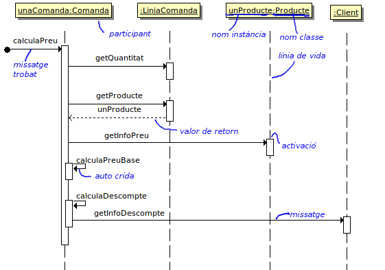
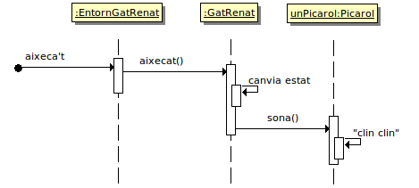

Diagrames de seqüència
Entrada ubicada a la categoria
uml
Introducció
Aquest document és un guió per la presentació a classe dels diagrames de seqüència.
Exemple Comandes

Imatge generada amb BOUML
Del llibre UML Distilled: A Brief Guide to the Standard Object Modeling Language, Third Edition de Martin Fowler.
Exemple Entorn Gat Renat
Considerant l'entorn operatiu del Gat Renat amb l'ampliació de l'exercici 1 de Relacions entre classes

Exercicis
Exercici 1. L'activitat dels ulls del Gat Renat
Representa el diagrama de seqüència corresponent a l'exercici 2 de Relacions entre classes de manera que es pugui entendre com interacciona el gat amb els ulls a partir dels diferents serveis del gat que afecten a l'estat dels ulls.